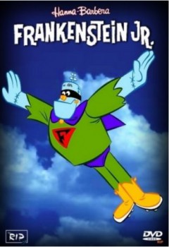

Frankenstein Jr - Season ??? (1966)


Also known as:Frankenstein Jr
Country:United States,
Spoken languages:English
Genres:Animation, Comedy, Fantasy
Director(s):Joseph Barbera, William Hanna
Writer(s):
Video Codec:Unknown
Number: 1
Tomatometer:

--

--
IMDb Rating:

Certification:Livre
Storyline:
A ideia de transformá-lo o monstro em super-herói foi usada pela Hanna e Barbera no desenho intitulado Frankenstein Jr. A animação transforma o monstro do livro num gigantesco robô com super poderes, para combater todos os tipos d...
Cast:
Medium: Digital Copy,
Location: S500
Loaned: No
Aspect ratio: Unknown